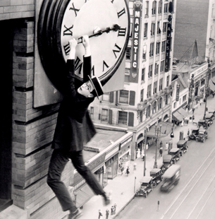
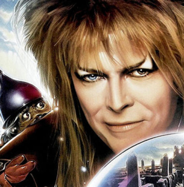
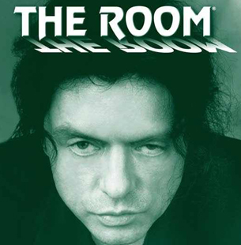
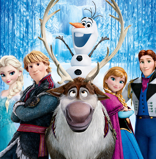

Safety Last! (U)
The comic genius of silent movie star Harold Lloyd never fades. Standing alongside Keaton and Chaplin as one of cinema’s finest physical comedians, his crowning glory is undoubtedly his 1923 film Safety Last!, featuring the infamous stunt where Lloyd ends up hanging from a gigantic clock face.
Lloyd stars in Safety Last! as a country bumpkin who makes his way to the big city, but finds that making money to support himself and his girlfriend (Mildred Davis) is no easy feat. When he hears that a department store owner is offering a cash prize to anybody who can help drum up business for his store, he hatches a plan with his daredevil friend that leads to a hair-raising stunt.
The infamous scene might have involved trick photography, but there was real danger involved for Lloyd, not least because a previous accident on set had left his right hand missing a thumb and index finger.
Showing on the main stage at Flickerama, this is a rare chance to enjoy one of cinema’s earliest achievements on a suitably grand stage.
Labyrinth Masquerade Ball (U)
Join us for a night of mystery and wonder as Flickerama hosts a very special Masquerade Ball alongside a screening of Jim Henson’s 1986 cult favourite Labyrinth.
Frustrated with babysitting on yet another weekend evening, Sarah (Jennifer Connelly), a teenager with an active imagination, inadvertently summons goblins to take her baby stepbrother away. When little Toby actually disappears, Sarah must follow him into a fantastical world to rescue him from the Goblin King (David Bowie). Guarding his castle is the labyrinth itself, a twisted maze of deception, populated with outrageous characters and unknown dangers. Sarah must get through it in time to save Toby, or the Goblin King will keep him there forever…
Featuring a whole host of Henson puppets both loveable and enjoyably creepy, Labyrinth holds a special place in the hearts of millions of people, and this very special evening will celebrate one of the finest fantasy films to ever come out of Hollywood.
The screening takes place in one of Flickerama’s indoor pavilions and will be followed by a masquerade ball based on the eccentric party Sarah and the Goblin King attend in the film, complete with themed cocktails and a sumptuous meal. So don your finest evening wear, raise a Venetian mask and enter a world of fantasy...
The Room (18)
Made in 2003, The Room is a truly bizarre, genuinely hilarious relationship drama that has slowly and steadily become a bona fide cult classic thanks to a legion of fans who have come to love its bizarre plot, terrible acting and strange editing.
Director-writer-star Tommy Wiseau is the mad genius behind this jaw-droppingly weird movie, where subplots appear and disappear with no resolution, characters suffer intense mood swings in the space of seconds, and one character announces she has breast cancer and then never mentions it again.
Over the years, audience interaction has become a big part of The Room's eccentric appeal, as audience members don tuxedos, shout out lines and throw plastic spoons at the screen, all thoroughly encouraged for this late night Flickerama screening.
The Room is the Citizen Kane of bad movies, and just as memorable.
Frozen Singalong (PG)
Get those pipes working as we host a huge Frozen Singalong on our main stage. Sing along to an award winning score in an environment perfect for singing out loud and proud, with maybe even a graceful dance move or two thrown in for good measure.
Frozen is a stunning bigscreen comedy adventure that’s swiftly become one of the most popular Disney films ever made.
Fearless optimist Anna (voice of Kristen Bell) sets off on an epic journey – teaming up with rugged mountain man Kristoff (voice of Jonathan Groff) and his loyal reindeer Sven – to find her sister Elsa (voice of Idina Menzel), whose icy powers have trapped the kingdom of Arendelle in eternal winter.
Encountering Everest-like conditions, mystical trolls and a hilarious snowman named Olaf, Anna and Kristoff battle the elements in a race to save the kingdom.